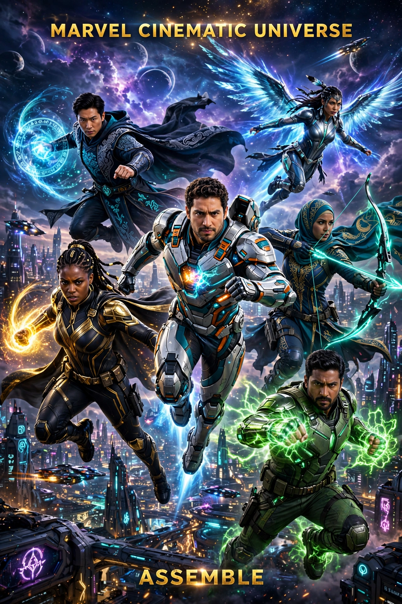

The Marvel Cinematic Universe (MCU) is an American media franchise and shared universe centered on a series of superhero films produced by Marvel Studios, based on characters from Marvel Comics. The franchise also includes television series, short films, digital series, and literature.

| Marvel Cinematic Universe | |
|---|---|
| Created by | Marvel Studios |
| Original work | Iron Man (2008) |
| Owner | The Walt Disney Company |
| Years | 2008–present |
| Based on | Characters from Marvel Comics |
Marvel Studios, led by Kevin Feige, planned an interconnected series of films after the success of earlier Marvel adaptations. Iron Man (2008), directed by Jon Favreau and starring Robert Downey Jr., launched Phase One, culminating in The Avengers (2012).
The Infinity Saga comprises Phases One to Three, ending with Avengers: Endgame (2019) and Spider-Man: Far From Home. The Multiverse Saga comprises Phases Four to Six, introducing Disney+ series such as WandaVision, Loki, and films exploring the multiverse.
The MCU is the highest-grossing film franchise of all time, grossing over $30 billion worldwide. Several films rank among the highest-grossing ever made.